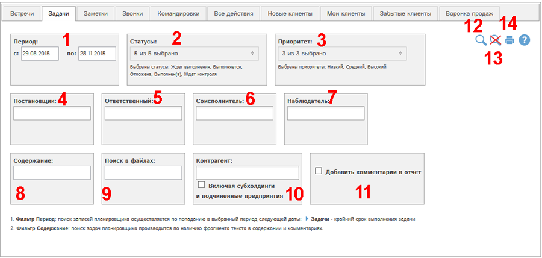
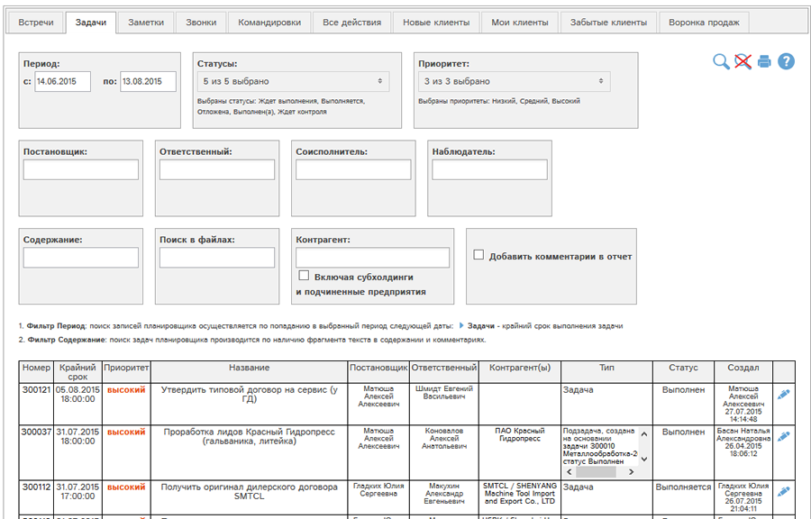

Отчет позволяет получить данные о задачах, доступных Вам в планировщике.

Рис. Форма отчета Задачи.
Доступны следующие фильтры и кнопки:
- Период - задачи отбираются по попаданию даты крайнего срока выполнения в указанный период
- Отбор по статусам задач
- Отбор по приоритету задач
- Отбор по сотруднику-постановщику задачи (можно выбрать несколько сотрудников)
- Отбор по сотруднику-ответственному (можно выбрать несколько сотрудников)
- Отбор по сотруднику-соисполнителю задачи (можно выбрать несколько сотрудников)
- Отбор по сотруднику-наблюдателю задачи (можно выбрать несколько сотрудников)
- Отбор по фрагменту описания задачи
- Искать по фрагменту в приложенных файлах. Поиск по вложенным файлам доступен для файлов следующих типов: txt, docx, xlsx, xls, csv, pptx.
- Отбор по связанным контрагентам. Галочка "Включая субхолдинги и подчиненные предприятия" позволяет выбрать в отчет также данные по субхолдингам и подчиненным предприятиям выбранных контрагентов.
- Добавить описание и все комментарии по задаче в отчет.
- Показать отчет по выбранным фильтрам
- Сбросить все фильтры
- Получить печатную версию отчета по выбранным фильтрам в pdf-формате.
Рассмотрим пример отчета со значениями фильтров по умолчанию. Для этого нажмем кнопку  :
:
